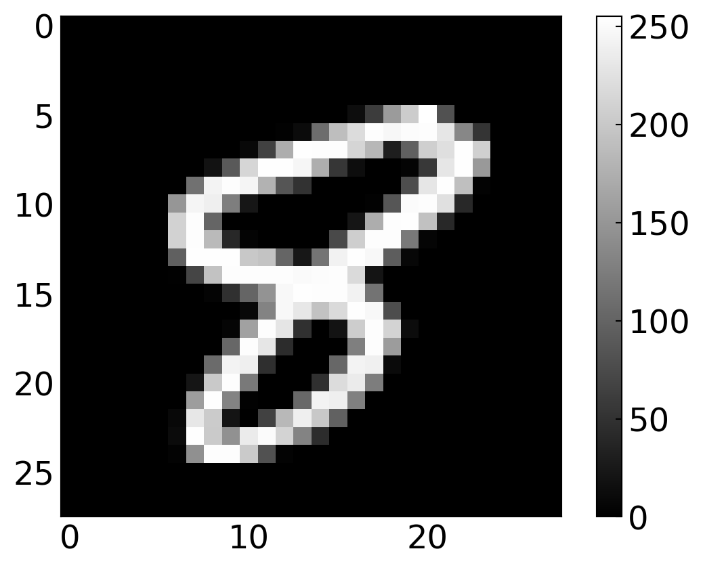
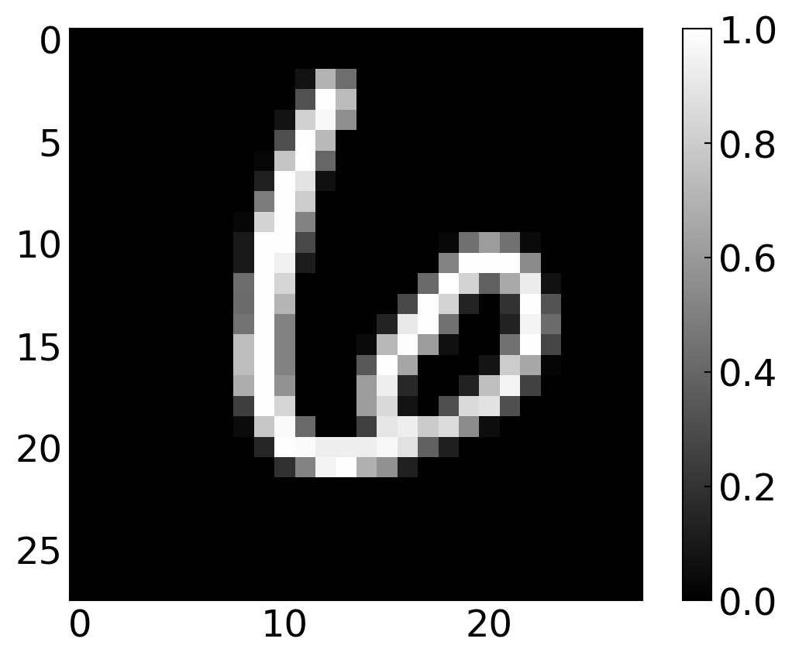
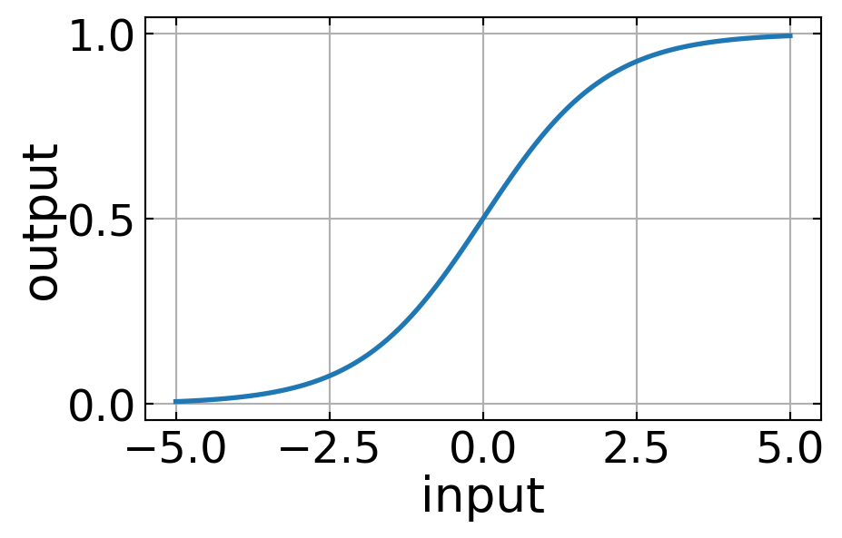
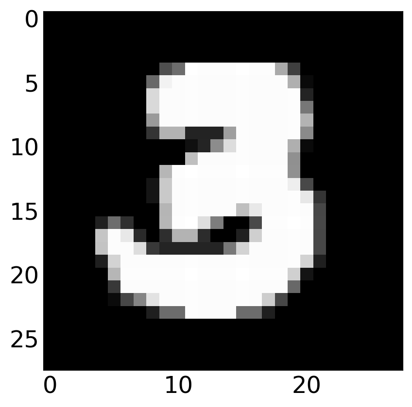

import numpy as np
import matplotlib.pyplot as plt
%matplotlib inline
%config InlineBackend.figure_format = 'retina'
plt.rcParams.update({'font.size': 18,
'axes.titlesize': 20,
'axes.labelsize': 20,
'axes.labelpad': 1,
'lines.linewidth': 2,
'lines.markersize': 10,
'xtick.labelsize' : 18,
'ytick.labelsize' : 18,
'xtick.top' : True,
'xtick.direction' : 'in',
'ytick.right' : True,
'ytick.direction' : 'in'
})Neural Networks
Neural networks are one of the most commonly used machine learning objects nowadays. Mostly these systems are known as deep neural networks, which just says something about how many layers in which neurons are arranged exist. We will in this lecture have a look at the basic unit, the neuron, and how to connect and train a network. We will do all ourselves, that means, we will not use one of the many existing python modules, that simplifies the task. This notebook has been largely developed by Martin Fränzl.
In this lecture we are going to build a neural network from scratch using Python and NumPy (The high-level libaries like Keras and TensorFlow will be covered in Part 2). We will build a network to recognize hand-written digits, using the famous MNIST data set.

We will start with the simplest possible “network”: A single node that recognizes just the digit 0. This is actually just an implementation of logistic regression, but it will help us understand some of the key components before things get more complicated. Then we’ll extend that into a network with one hidden layer, still recognizing just 0. Finally, we will extend the network to recognize all the digits 0 through 9. That will give us a 92% accurate digit-recognizer.
The MNIST Data Set
The MNIST data set contains 70,000 images of hand-written digits, each 28 x 28 pixels, in greyscale with pixel-values from 0 to 255. We could download and preprocess the data ourselves, but the makers of the module sklearn already did that for us:
Load the data
from sklearn.datasets import fetch_openml
X, y = fetch_openml('mnist_784', version=1, return_X_y=True,as_frame=False)The images are now contained in the array X, while the labels (so which number it is) are contained in y. Let’s have a look at a random image and label.
i = 33419
plt.imshow(np.array(X)[i].reshape(28, 28), cmap='gray')
plt.colorbar()
plt.show()
print('label: ',y[i])
label: 8Normalize the data
To use data in neural networks as training data, it is always useful to normalize the data to the interval [0, 1].
X = X/255Preparing training and testing data
The default MNIST labels say ‘1’ for an image of a one, ‘2’ for an image of a two, etc., but we are just building a zero classifier for now. So we want our labels to say 1 when we have a zero, and 0 otherwise. So we overwrite the labels accordingly:
y_new = np.zeros(y.shape)
y_new[np.where(y == '0')[0]] = 1
y = y_newWe now split the data in a train and test set. The MNIST images are pre-arranged so that the first 60,000 can be used for training, and the last 10,000 for testing. We’ll also transform the data into the shape we want, with each example in a column (instead of a row):
m = 60000
m_test = X.shape[0] - m
X_train, X_test = X[:m].T, X[m:].T
y_train, y_test = y[:m].reshape(1,m), y[m:].reshape(1, m_test)Finally, we shuffle the training set:
np.random.seed(1)
shuffle_index = np.random.permutation(m)
X_train, y_train = X_train[:,shuffle_index], y_train[:,shuffle_index]Let’s again have a look at random image and label just to check
i = 39
plt.imshow(X_train[:,i].reshape(28, 28), cmap='gray')
plt.colorbar()
plt.show()
print(y_train[:,i])
[0.]Try to find a zero to check whether the corresponding label is a 1.
A Single Neuron
The basic unit of a neural network is a neuron. A neuron takes inputs, does some math with them, and produces one output. The neuron below does that with two inputs.

Forward Propogation
The neuron does now three things.
- Take input values and multipy by weights
\[\begin{eqnarray} x_{1}\rightarrow x_{1} w_{1}\\ x_{2}\rightarrow x_{2} w_{2} \end{eqnarray}\]
- All the weighted inputs are the added to a bias value \(b\)
\[\begin{equation} x_{1} w_{1}+ x_{2} w_{2}+b \end{equation}\]
- The output is generated by applying a function \(\sigma()\) \[\begin{equation} y=\sigma( x_{1} w_{1}+ x_{2} w_{2}+b) \end{equation}\]
This function is called activation function. The activation function is used to turn an unbounded input value into a bounded output value with a predictable range. A commonly used activation function is the sigmoid function.
For a single input dataset \(x\) a more compact writing of the math above is
\[\begin{equation*} \hat{y} = \sigma(w^{\rm T} x + b)\ . \end{equation*}\]
Here \(\sigma\) is the sigmoid function: \[\begin{equation*} \sigma(z) = \frac{1}{1+{\rm e}^{-z}}\ . \end{equation*}\]
The sigmoid function is something we can already define and plot.
def sigmoid(z):
return 1/(1 + np.exp(-z))x=np.linspace(-5,5,100)
plt.figure(figsize=(5,3))
plt.plot(x,sigmoid(x))
plt.xlabel('input')
plt.ylabel('output')
plt.grid()
plt.show()
If we now have this kind of two input neuron with the weights \(w\) and the bias value \(b\)
\[\begin{eqnarray} w=[0,1]\\ b=4 \end{eqnarray}\]
we may supply and input
\[\begin{eqnarray} x=[2,3] \end{eqnarray}\]
which gives writing it a s a dot product
\[\begin{equation} y=f(w\cdot x+b)=f(7)=0.999 \end{equation}\]
This procedure of propagating the input values to obtain and output value is called feedforward or forward propagation. Our first goal is now to create a network with a single neuron with 784 inputs (28 x 28), and a single sigmoid unit generating the output.
The above examples can be written and executed more efficiently in a vectorized form. Generating the output We’ll vectorize by stacking examples side-by-side, so that our input matrix \(X\) has an example in each column. The vectorized form of the forward pass is then
\[\begin{equation*} \hat{y} = \sigma(w^{\rm T} X + b)\ . \end{equation*}\]
Note that \(\hat{y}\) is now a vector, not a scalar as it was in the previous equation.
In our code we will compute this in two stages: Z = np.matmul(W.T, X) + b and then A = sigmoid(Z) (A for Activation). Breaking things up into stages like this is just for clarity - It will make our forward pass computations mirror the steps in our backward propagation computation.
Loss Function
Since we have now data and we also know how to propagate (at least in principle) the input through the single neuron here, we also need to define a measure for how far the output deviates from the input. This measure is called loss. The many different ways of defining a suitable loss. The mean squared error, as it appeared already during our fitting lecture, could be a suitable loss function
\[\begin{equation} MSE(y,\hat{y})=\frac{1}{n}\sum_{i=1}^{n}(y-\hat{y})^2 \end{equation}\]
for a number of \(n\) datasets. Here \(\hat{y}\) is the data that is predicted by the network and \(y\) is the value which represents the so called ground truth, i.e. the data provided by the training set.
We will not use the mean squared error bu the cross-entropy for our loss function. The formula for a single training example (one input image) is:
\[\begin{equation*} L(y,\hat{y}) = -y\log(\hat{y})-(1-y)\log(1-\hat{y})\ . \end{equation*}\]
This error definition comes from the Shannon entropy definition, which you may look up in the web if you are interested. Averaging over a training set of \(m\) examples we then have:
\[\begin{equation*} L(Y,\hat{Y}) = -\frac{1}{m}\sum_{i = 0}^{m}y^{(i)}\log(\hat{y}^{(i)})-(1-y^{(i)})\log(1-\hat{y}^{(i)})\ . \end{equation*}\]
In Python code, this looks like
def compute_loss(Y, Y_hat):
m = Y.shape[1]
L = -(1./m)*(np.sum(np.multiply(np.log(Y_hat), Y)) + np.sum(np.multiply(np.log(1 - Y_hat), (1 - Y))))
return LTrainging the Network
The goal of all neural network training procedures is to minimize the loss and we have to find a way to minimize that loss. This is not so much different from our fitting of function values before.
Backward Propagation
The output of the network is determined by the input values and how we have distributed the weights \(w\) and the biases \(b\). We can write the loss function therefore as a function of the weights and losses
\[ L(w_{1},w_{2},w_{3},\ldots ,b_{1},b_{2},b_{3},\ldots) \]
To train the network, we would now try to find out, by how much the output values change if we do change a specific weight \(w_j\). This can be expressed by the partial derivative
\[ \frac{\partial L}{\partial w_j} \]
We may then take a tiny step and correct the current value of \(w_j\) such that the network yields a new output. This way back from the current output of the network and its current loss to a correction of the weights to yield a smaller loss is called back propagation.
Calculating derivatives
Focusing on a single input image will make it easier to derive the formulas we need. Holding all values except \(w_j\) fixed, we can think of \(L\) as being computed in three steps: \(w_j\rightarrow z \rightarrow \hat{y} \rightarrow L\). The formulas for these steps are: \[\begin{align*} z &= w^{\rm T} x + b\ , \\ \hat{y} &= \sigma(z)\ , \\ L(y,\hat{y}) &= -y\log(\hat{y})-(1-y)\log(1-\hat{y})\ . \end{align*}\]
The change of the loss function with the weights can then be split up by the chain rule into
\[\begin{align*}
\frac{\partial L}{\partial w_j} = \frac{\partial L}{\partial \hat{y}}\frac{\partial \hat{y}}{\partial z}\frac{\partial z}{\partial w_j}
\end{align*}\]
There we have a product of three individual partial derivatives, which are a bit tedius to write down, but not to complicated. The read like
\(\partial L/\partial\hat{y}\): \[\begin{align*} \frac{\partial L}{\partial\hat{y}} &= \frac{\partial}{\partial\hat{y}}\left(-y\log(\hat{y})-(1-y)\log(1-\hat{y})\right) \\ &= -y\frac{\partial}{\partial\hat{y}}\log(\hat{y})-(1-y)\frac{\partial}{\partial\hat{y}}\log(1-\hat{y}) \\ &= -\frac{y}{\hat{y}} +\frac{(1 - y)}{1-\hat{y}} \\ &= \frac{\hat{y} - y}{\hat{y}(1-\hat{y})} \end{align*}\]
\(\partial \hat{y}/\partial z\): \[\begin{align*} \frac{\partial }{\partial z}\sigma(z) &= \frac{\partial }{\partial z}\left(\frac{1}{1 + {\rm e}^{-z}}\right) \\ &= \frac{1}{(1 + {\rm e}^{-z})^2}\frac{\partial }{\partial z}(1 + {\rm e}^{-z}) \\ &= \frac{{\rm e}^{-z}}{(1 + {\rm e}^{-z})^2} \\ &= \frac{1}{1 + {\rm e}^{-z}}\frac{{\rm e}^{-z}}{1 + {\rm e}^{-z}} \\ &= \frac{1}{1 + {\rm e}^{-z}}\left(1 - \frac{1}{1 + {\rm e}^{-z}}\right) \\ &= \sigma(z)(1-\sigma(z)) \\ &= \hat{y}(1-\hat{y}) \end{align*}\]
\(\partial z/\partial w_j\): \[\begin{align*} \frac{\partial }{\partial w_j}(w^{\rm T} x + b) &= \frac{\partial }{\partial w_j}(w_0x_0 + \dots + w_nx_n + b) \\ &= x_j \end{align*}\]
Substituting back into the chain rule yields: \[\begin{align*} \frac{\partial L}{\partial w_j} &= \frac{\partial L}{\partial \hat{y}}\frac{\partial \hat{y}}{\partial z}\frac{\partial z}{\partial w_j} \\ &= \frac{\hat{y} - y}{\hat{y}(1-\hat{y})}\hat{y}(1-\hat{y}) x_j \\ &= (\hat{y} - y)x_j\ . \end{align*}\]
which does not look that unfriendly anymore.
In vectorized form with \(m\) training examples this gives us \[\begin{align*} \frac{\partial L}{\partial w} = \frac{1}{m} X(\hat{y} - y)^{\rm T}\ . \end{align*}\]
A very similar derivation of \(\partial L/\partial b\) yields, for a single example: \[\begin{align*} \frac{\partial L}{\partial b} = (\hat{y} - y)\ . \end{align*}\]
In vectorized form we get \[\begin{align*} \frac{\partial L}{\partial b} = \frac{1}{m}\sum_{i=1}^{m}{(\hat{y}^{(i)} - y^{(i)})}\ . \end{align*}\]
In our code we label these gradients according to their denominators, as dW and db. So for backpropagation we compute dW = (1/m) * np.matmul(X, (A-Y).T) and db = (1/m)*np.sum(A-Y, axis=1, keepdims=True).
Stochastic Gradient Descent
We have all the tools we need to train a neural network now! We’ll use an optimization algorithm called stochastic gradient descent (SGD) that tells us how to change our weights and biases to minimize loss. It is a simple umpdate of the weights and biases, which would read for the weights like
\[ w\leftarrow w-\eta\frac{\partial L}{\partial w} \]
where \(\eta\) is a constant called the learning rate that controls how fast we train. All we’re doing is subtracting \(\eta \partial L/\partial w\) from \(w\)
- If \(\partial L/\partial w\) is positive, \(w\) will decrease, which makes L decrease.
- If \(\partial L/\partial w\) is negative, \(w\) will increase, which makes L decrease.
The equations look equivalent for the bias \(b\). Our back propagation procedure will do that for as many steps we want, i.e. until we feel that the output is close enough to the ground truth. Each back propagation step is called and epoch.
Build an Train
Now we have all things together to create a single neuron network doing the analysis of the MNIST numbers. This type of data processing is called logistic regression based on the sigmoid function, which is a logistic function. So let’s create all in python code and train the network for 100 epochs.
learning_rate = 1
X = np.array(X_train)
Y = np.array(y_train)
n_x = X.shape[0]
m = X.shape[1]
W = np.random.randn(n_x, 1) * 0.01
b = np.zeros((1, 1))
for i in range(200):
Z = np.matmul(W.T, X) + b
A = sigmoid(Z)
loss = compute_loss(Y, A)
dW = (1/m)*np.matmul(X, (A-Y).T)
db = (1/m)*np.sum(A-Y, axis=1, keepdims=True)
W = W - learning_rate * dW
b = b - learning_rate * db
if i % 10 == 0:
print("Epoch", i, " loss: ", loss)
print("Final loss:", loss)Epoch 0 loss: 0.7471125121616977
Epoch 10 loss: 0.07308269582929021
Epoch 20 loss: 0.061318323546277226/var/folders/t4/_9qps8wj56jc60nwkr3nrcr00000gn/T/ipykernel_44637/1534748172.py:13: RuntimeWarning: divide by zero encountered in matmul
Z = np.matmul(W.T, X) + b
/var/folders/t4/_9qps8wj56jc60nwkr3nrcr00000gn/T/ipykernel_44637/1534748172.py:13: RuntimeWarning: overflow encountered in matmul
Z = np.matmul(W.T, X) + b
/var/folders/t4/_9qps8wj56jc60nwkr3nrcr00000gn/T/ipykernel_44637/1534748172.py:13: RuntimeWarning: invalid value encountered in matmul
Z = np.matmul(W.T, X) + b
/var/folders/t4/_9qps8wj56jc60nwkr3nrcr00000gn/T/ipykernel_44637/1534748172.py:18: RuntimeWarning: divide by zero encountered in matmul
dW = (1/m)*np.matmul(X, (A-Y).T)
/var/folders/t4/_9qps8wj56jc60nwkr3nrcr00000gn/T/ipykernel_44637/1534748172.py:18: RuntimeWarning: overflow encountered in matmul
dW = (1/m)*np.matmul(X, (A-Y).T)
/var/folders/t4/_9qps8wj56jc60nwkr3nrcr00000gn/T/ipykernel_44637/1534748172.py:18: RuntimeWarning: invalid value encountered in matmul
dW = (1/m)*np.matmul(X, (A-Y).T)Epoch 30 loss: 0.055230119812005714
Epoch 40 loss: 0.051324320236142515
Epoch 50 loss: 0.048540041963711845
Epoch 60 loss: 0.04642485272904433
Epoch 70 loss: 0.04474722082574825
Epoch 80 loss: 0.043374333931969114
Epoch 90 loss: 0.04222371551840797
Epoch 100 loss: 0.041241045998320916
Epoch 110 loss: 0.040388886511106684
Epoch 120 loss: 0.03964048057966332
Epoch 130 loss: 0.0389761317586134
Epoch 140 loss: 0.03838097920656846
Epoch 150 loss: 0.03784357458020544
Epoch 160 loss: 0.037354939644815115
Epoch 170 loss: 0.03690792357698068
Epoch 180 loss: 0.03649675336766015
Epoch 190 loss: 0.03611671225524699
Final loss: 0.03579805734492837We do not really now how to judge the quality of our trained network. At least we saw that the loss is decreasing, which is good. We may judge the quality of our trained network by calculating the so-called confusion matrix. The confusion matrix is creating a matrix giving reports the actual values in the rows and the predicted values in the columns.

The entries in the matrix are called true positives (TP), false positives (FP), false negatives (FN), and true negatives (TN). Fortunately we can use a method of the sklearn module to calculate the confusion matrix. We just have to supply the predictions and the actual labels to it. To do so, we use the testing data set X_test which we have splitted earlier.
from sklearn.metrics import confusion_matrix, classification_report
Z = np.matmul(W.T,X_test) + b
A = sigmoid(Z)
predictions = (A>.5)[0,:]
labels = (y_test == 1)[0,:]
print(confusion_matrix(predictions, labels))[[8973 33]
[ 47 947]]/var/folders/t4/_9qps8wj56jc60nwkr3nrcr00000gn/T/ipykernel_44637/2374582204.py:3: RuntimeWarning: divide by zero encountered in matmul
Z = np.matmul(W.T,X_test) + b
/var/folders/t4/_9qps8wj56jc60nwkr3nrcr00000gn/T/ipykernel_44637/2374582204.py:3: RuntimeWarning: overflow encountered in matmul
Z = np.matmul(W.T,X_test) + b
/var/folders/t4/_9qps8wj56jc60nwkr3nrcr00000gn/T/ipykernel_44637/2374582204.py:3: RuntimeWarning: invalid value encountered in matmul
Z = np.matmul(W.T,X_test) + bprint(classification_report(predictions, labels)) precision recall f1-score support
False 0.99 1.00 1.00 9006
True 0.97 0.95 0.96 994
accuracy 0.99 10000
macro avg 0.98 0.97 0.98 10000
weighted avg 0.99 0.99 0.99 10000
Testing our model
We can check a single image of our testing data with the following line. If the output number is bigger than 0.5, our number is likely a 0.
i=200
bool(sigmoid(np.matmul(W.T, np.array(X_test)[:,i])+b)>0.5)Falseplt.imshow(np.array(X_test)[:,i].reshape(28,28),cmap='gray')

Multiclass Network
So far we did only classify if the number we feed to the network is just a 0 or not. We would like to recognize the different number now and therefore need a multiclass network. Each number is then a class and per class, we have multiple realizations of handwritten numbers. We therefore have to create an output layer, which is not only containing a single neuron, but 10 neurons. Each of these neuron can output a value between 0 and 1. Whenever the output is 1, the index of the neuron represents the number predicted.
The output array
[0,1,0,0,0,0,0,0,0,0]would therefore correspond to the value 1.
For this purpose, we need to reload the right labels.
from sklearn.datasets import fetch_openml
X, y = fetch_openml('mnist_784', version=1, return_X_y=True,as_frame=False)
X = X / 255Then we’ll one-hot encode MNIST’s labels, to get a 10 x 70,000 array.
digits = 10
examples = y.shape[0]
y = y.reshape(1, examples)
Y_new = np.eye(digits)[y.astype('int32')]
Y_new = Y_new.T.reshape(digits, examples)Y_new.shape(10, 70000)We also seperate into trainging and testing data
m = 60000
m_test = X.shape[0] - m
X_train, X_test = X[:m].T, X[m:].T
Y_train, Y_test = Y_new[:,:m], Y_new[:,m:]
shuffle_index = np.random.permutation(m)
X_train, Y_train = X_train[:, shuffle_index], Y_train[:, shuffle_index]i = 58
plt.imshow(X_train[:,i].reshape(28,28), cmap='gray')
plt.colorbar()
plt.show()
Y_train[:,i]
array([0., 0., 0., 0., 0., 0., 0., 0., 0., 1.])Changes to the model
OK, so let’s consider what changes we need to make to the model itself.
Forward Pass
Only the last layer of our network is changing. To add the softmax, we have to replace our lone, final node with a 10 unit layer. Its final activations are the exponentials of its z-values, normalized across all ten such exponentials. So instead of just computing \(\sigma(z)\), we compute the activation for each unit \(i\) using the softmax function: \[\begin{align*} \sigma(z)_i = \frac{{\rm e}^{z_i}}{\sum_{j=0}^9{\rm e}^{z_i}}\ . \end{align*}\]
So, in our vectorized code, the last line of forward propagation will be A2 = np.exp(Z2) / np.sum(np.exp(Z2), axis=0).
Loss Function
Our loss function now has to generalize to more than two classes. The general formula for \(n\) classes is: \[\begin{align*} L(y,\hat{y}) = -\sum_{i=0}^n y_i\log(\hat{y}_i)\ . \end{align*}\] Averaging over \(m\) training examples this becomes: \[\begin{align*} L(y,\hat{y}) = -\frac{1}{m}\sum_{j=0}^m\sum_{i=0}^n y_i^{(i)}\log(\hat{y}_i^{(i)})\ . \end{align*}\]
So let’s define:
def compute_multiclass_loss(Y, Y_hat):
L_sum = np.sum(np.multiply(Y, np.log(Y_hat)))
m = Y.shape[1]
L = -(1/m) * L_sum
return LBack Propagation
Luckily it turns out that back propagation isn’t really affected by the switch to a softmax. A softmax generalizes the sigmoid activiation we’ve been using, and in such a way that the code we wrote earlier still works. We could verify this by deriving: \[\begin{align*} \frac{\partial L}{\partial z_i} = \hat{y}_i - y_i\ . \end{align*}\]
But we won’t walk through the steps here. Let’s just go ahead and build our final network.
Build and Train
As we have now more weights and classes, the training takes longer and we actually need also more episodes to achieve a good accuracy.
n_x = X_train.shape[0]
n_h = 64
learning_rate = 1
W1 = np.random.randn(n_h, n_x)
b1 = np.zeros((n_h, 1))
W2 = np.random.randn(digits, n_h)
b2 = np.zeros((digits, 1))
X = X_train
Y = Y_train
for i in range(200):
Z1 = np.matmul(W1,X) + b1
A1 = sigmoid(Z1)
Z2 = np.matmul(W2,A1) + b2
A2 = np.exp(Z2) / np.sum(np.exp(Z2), axis=0)
loss = compute_multiclass_loss(Y, A2)
dZ2 = A2-Y
dW2 = (1./m) * np.matmul(dZ2, A1.T)
db2 = (1./m) * np.sum(dZ2, axis=1, keepdims=True)
dA1 = np.matmul(W2.T, dZ2)
dZ1 = dA1 * sigmoid(Z1) * (1 - sigmoid(Z1))
dW1 = (1./m) * np.matmul(dZ1, X.T)
db1 = (1./m) * np.sum(dZ1, axis=1, keepdims=True)
W2 = W2 - learning_rate * dW2
b2 = b2 - learning_rate * db2
W1 = W1 - learning_rate * dW1
b1 = b1 - learning_rate * db1
if (i % 10 == 0):
print("Epoch", i, "loss: ", loss)
print("Final loss:", loss)/var/folders/t4/_9qps8wj56jc60nwkr3nrcr00000gn/T/ipykernel_44637/1725216505.py:15: RuntimeWarning: divide by zero encountered in matmul
Z1 = np.matmul(W1,X) + b1
/var/folders/t4/_9qps8wj56jc60nwkr3nrcr00000gn/T/ipykernel_44637/1725216505.py:15: RuntimeWarning: overflow encountered in matmul
Z1 = np.matmul(W1,X) + b1
/var/folders/t4/_9qps8wj56jc60nwkr3nrcr00000gn/T/ipykernel_44637/1725216505.py:15: RuntimeWarning: invalid value encountered in matmul
Z1 = np.matmul(W1,X) + b1
/var/folders/t4/_9qps8wj56jc60nwkr3nrcr00000gn/T/ipykernel_44637/1725216505.py:17: RuntimeWarning: divide by zero encountered in matmul
Z2 = np.matmul(W2,A1) + b2
/var/folders/t4/_9qps8wj56jc60nwkr3nrcr00000gn/T/ipykernel_44637/1725216505.py:17: RuntimeWarning: overflow encountered in matmul
Z2 = np.matmul(W2,A1) + b2
/var/folders/t4/_9qps8wj56jc60nwkr3nrcr00000gn/T/ipykernel_44637/1725216505.py:17: RuntimeWarning: invalid value encountered in matmul
Z2 = np.matmul(W2,A1) + b2
/var/folders/t4/_9qps8wj56jc60nwkr3nrcr00000gn/T/ipykernel_44637/1725216505.py:23: RuntimeWarning: divide by zero encountered in matmul
dW2 = (1./m) * np.matmul(dZ2, A1.T)
/var/folders/t4/_9qps8wj56jc60nwkr3nrcr00000gn/T/ipykernel_44637/1725216505.py:23: RuntimeWarning: overflow encountered in matmul
dW2 = (1./m) * np.matmul(dZ2, A1.T)
/var/folders/t4/_9qps8wj56jc60nwkr3nrcr00000gn/T/ipykernel_44637/1725216505.py:23: RuntimeWarning: invalid value encountered in matmul
dW2 = (1./m) * np.matmul(dZ2, A1.T)
/var/folders/t4/_9qps8wj56jc60nwkr3nrcr00000gn/T/ipykernel_44637/1725216505.py:26: RuntimeWarning: divide by zero encountered in matmul
dA1 = np.matmul(W2.T, dZ2)
/var/folders/t4/_9qps8wj56jc60nwkr3nrcr00000gn/T/ipykernel_44637/1725216505.py:26: RuntimeWarning: overflow encountered in matmul
dA1 = np.matmul(W2.T, dZ2)
/var/folders/t4/_9qps8wj56jc60nwkr3nrcr00000gn/T/ipykernel_44637/1725216505.py:26: RuntimeWarning: invalid value encountered in matmul
dA1 = np.matmul(W2.T, dZ2)
/var/folders/t4/_9qps8wj56jc60nwkr3nrcr00000gn/T/ipykernel_44637/1725216505.py:28: RuntimeWarning: divide by zero encountered in matmul
dW1 = (1./m) * np.matmul(dZ1, X.T)
/var/folders/t4/_9qps8wj56jc60nwkr3nrcr00000gn/T/ipykernel_44637/1725216505.py:28: RuntimeWarning: overflow encountered in matmul
dW1 = (1./m) * np.matmul(dZ1, X.T)
/var/folders/t4/_9qps8wj56jc60nwkr3nrcr00000gn/T/ipykernel_44637/1725216505.py:28: RuntimeWarning: invalid value encountered in matmul
dW1 = (1./m) * np.matmul(dZ1, X.T)Epoch 0 loss: 9.359409945262724
Epoch 10 loss: 2.480915410750769
Epoch 20 loss: 1.6744327642277674
Epoch 30 loss: 1.3330104308788544
Epoch 40 loss: 1.1447842302497118
Epoch 50 loss: 1.0230964725181804
Epoch 60 loss: 0.9368747323694274
Epoch 70 loss: 0.8719573894048428
Epoch 80 loss: 0.8208795576102073
Epoch 90 loss: 0.7793325725168159
Epoch 100 loss: 0.7446649543545801
Epoch 110 loss: 0.7151537041535515
Epoch 120 loss: 0.6896258244540622
Epoch 130 loss: 0.6672519100025255
Epoch 140 loss: 0.6474268213495037
Epoch 150 loss: 0.6296970416913454
Epoch 160 loss: 0.6137147676333654
Epoch 170 loss: 0.5992079750548168
Epoch 180 loss: 0.5859603076597459
Epoch 190 loss: 0.5737971945414018
Final loss: 0.5636592880338956Let’s see how we did:
Z1 = np.matmul(W1, X_test) + b1
A1 = sigmoid(Z1)
Z2 = np.matmul(W2, A1) + b2
A2 = np.exp(Z2) / np.sum(np.exp(Z2), axis=0)
predictions = np.argmax(A2, axis=0)
labels = np.argmax(Y_test, axis=0)/var/folders/t4/_9qps8wj56jc60nwkr3nrcr00000gn/T/ipykernel_44637/3032217627.py:1: RuntimeWarning: divide by zero encountered in matmul
Z1 = np.matmul(W1, X_test) + b1
/var/folders/t4/_9qps8wj56jc60nwkr3nrcr00000gn/T/ipykernel_44637/3032217627.py:1: RuntimeWarning: overflow encountered in matmul
Z1 = np.matmul(W1, X_test) + b1
/var/folders/t4/_9qps8wj56jc60nwkr3nrcr00000gn/T/ipykernel_44637/3032217627.py:1: RuntimeWarning: invalid value encountered in matmul
Z1 = np.matmul(W1, X_test) + b1
/var/folders/t4/_9qps8wj56jc60nwkr3nrcr00000gn/T/ipykernel_44637/3032217627.py:3: RuntimeWarning: divide by zero encountered in matmul
Z2 = np.matmul(W2, A1) + b2
/var/folders/t4/_9qps8wj56jc60nwkr3nrcr00000gn/T/ipykernel_44637/3032217627.py:3: RuntimeWarning: overflow encountered in matmul
Z2 = np.matmul(W2, A1) + b2
/var/folders/t4/_9qps8wj56jc60nwkr3nrcr00000gn/T/ipykernel_44637/3032217627.py:3: RuntimeWarning: invalid value encountered in matmul
Z2 = np.matmul(W2, A1) + b2Model performance
print(confusion_matrix(predictions, labels))
print(classification_report(predictions, labels))[[ 896 0 26 8 8 22 30 4 14 10]
[ 0 1076 15 6 2 7 3 6 14 2]
[ 14 13 815 30 10 13 23 33 24 13]
[ 10 12 47 820 4 60 5 18 40 17]
[ 0 1 17 0 790 22 30 17 14 106]
[ 27 4 7 56 5 669 23 6 58 16]
[ 13 5 30 7 23 28 822 0 21 1]
[ 6 2 18 25 12 10 3 866 18 37]
[ 12 22 47 42 19 44 16 15 739 28]
[ 2 0 10 16 109 17 3 63 32 779]]
precision recall f1-score support
0 0.91 0.88 0.90 1018
1 0.95 0.95 0.95 1131
2 0.79 0.82 0.81 988
3 0.81 0.79 0.80 1033
4 0.80 0.79 0.80 997
5 0.75 0.77 0.76 871
6 0.86 0.87 0.86 950
7 0.84 0.87 0.86 997
8 0.76 0.75 0.75 984
9 0.77 0.76 0.76 1031
accuracy 0.83 10000
macro avg 0.82 0.83 0.82 10000
weighted avg 0.83 0.83 0.83 10000
We are at 84% accuray across all digits, which could be of course better. We may now plot image and the corresponding prediction.
Test the model
i=2003
plt.imshow(X_test[:,i].reshape(28,28), cmap='gray')
predictions[i]np.int64(5)